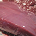
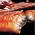
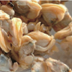
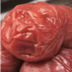
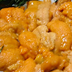
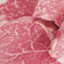
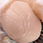
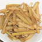

ミドリムシとは
ミドリムシとは
動物と植物の中間！珍しい微生物。
ミドリムシ(学術名：ユーグレナ)とは、５億年以上前の原始の地球で誕生した、動物と植物の性質を兼ね揃えた珍しい生物で、藻（も）の一種に分類される生物です。光合成を行って栄養分を体内に蓄える植物の性質と、細胞を変形させて移動する動物の性質を持っています。
植物の性質として、ビタミン13種類、ミネラル10種類、動物の性質として、アミノ酸18種類、不飽和脂肪酸13種類、さらに、ミドリムシだけに含まれている貴重な食物繊維成分のパラミロン（β-グルカン）などの５種類の特殊成分をバランスよく含有。
人間が体外から摂取すべき栄養素のほとんど全てを含んでいる(2010年4月28日毎日新聞朝刊)と紹介され、また「ミドリムシとカロリーを摂れば、理論的に人は生きていける」とも言われています。
東京大学内(培養は石垣島)で開発。
ミドリムシは1970年代にアメリカ航空宇宙局（NASA）で宇宙開発のために研究され、1990年代にはミドリムシを使った医療、医薬品の開発、二酸化炭素固定などについての研究が進められるなど注目されていたのですが、2005年に東京大学内の企業が世界で初めて食品としての屋外大量培養に成功し、近年、ご家庭でも手に入れることができるようになりました。
ミドリムシの特徴
栄養素がバランス良く、59種類も！
植物性の栄養も、動物性の栄養も。
植物と動物両方の性質を持ち合わせているミドリムシには、ビタミン、ミネラル、アミノ酸、カロテノイド、不飽和脂肪酸など、59種類もの栄養素をバランス良く備えています。また、成人の必須アミノ酸すべて(９種類)がバランスよく含まれています。
先進国の人々にとっては日々の食生活で足りない栄養を補う栄養補助食品、また、発展途上国などでは栄養不足に苦しんでいる人々に向けた食料援助の素材として、ミドリムシの食品開発が進められています。
ビタミン類１４種
- αカロテン
- βカロテン
- ビタミンB１
- ビタミンB２
- ビタミンB6
- ビタミンB12
- ビタミンC
- ビタミンD
- ビタミンE
- ビタミンK1
- ナイアシン
- パントテン酸
- ビオチン
- 葉酸
ミネラル９種
- マンガン
- 銅
- 鉄
- 亜鉛
- カルシウム
- マグネシウム
- カリウム
- リン
- ナトリウム
アミノ酸１８種
※必須アミノ酸含む
- バリン
- ロイシン
- イソロイシン
- アラニン
- アルギニン
- リジン
- アスパラギン酸
- グルタミン酸
- プロリン
- スレオニン
- メチオニン
- フェニルアラニン
- ヒスチジン
- チロシン
- トリプトファン
- グリシン
- セリン
- シスチン
不飽和脂肪酸
- DHA
- EPA
- パルミトレイン酸
- オレイン酸
- リノール酸
- リノレン酸
- エイコサジエン酸
- アラキドン酸
- ドコサテトラエン酸
- ドコサペンタエン酸
- ジホモγ-リノレン酸
その他
- パラミロン
- クロロフィル
- ルテイン
- ゼアキサンチン
- GABA
- スペルミジン
- プトレッシン
ミドリムシエメラルド3粒でこんな食品に該当します。
| ビタミンB1 | DHA・EPA | 亜鉛 |
|---|---|---|
|  生牛レバー |
 うなぎ蒲焼き |
 あさりむき身 |
| 50ｇ | 1/2尾 | 15個 |
| ビタミンA | 葉酸 | ビタミンB6 |
|  梅干し |
 うに |
 乾燥ひじき |
| 3個強 | 117g | 50g |
| ビタミンB12 | ビタミンB2 | カリウム |
|  牛ヒレ肉 |
 生ホタテ |
 しなちく |
| 50g | 2個分 | 50g |
アミノ酸バランスが理想的！
必須アミノ酸も自然にバランス良く
理想的なアミノ酸バランスを表す指標として、アミノ酸スコアという評価方法がありますが、理想値100中、ミドリムシのアミノ酸スコアは83！
乳製品や肉などの動物性食品は100、植物性食品は例えばじゃがいも73、とうもろこし31と差がありますが、ミドリムシの特徴である動物性も兼ね備えた点が、理想的なアミノ酸バランスとして表れています。
- ※アミノ酸とは・・・
- アミノ酸は、肌などの細胞の材料として、また体を動かす前後の疲労、毎日を元気に過ごすエネルギー源として活躍する栄養素です。特に、体内で作り出せない、生命活動に重要なアミノ酸を「必須アミノ酸」と呼び、食事から補う必要があります。
| アルギニン | 4.19g | リジン | 2.83g | ヒスチギン | 1.06g |
|---|---|---|---|---|---|
| フェニルアラニン | 1.79g | チロシン | 1.73g | ロイシン | 3.30g |
| イソロシン | 1.57g | メチオニン | 0.87g | バリン | 2.57g |
| アラニン | 3.03g | グリシン | 2.03g | プロリン | 2.45g |
| グルタミン酸 | 4.90g | セリン | 1.71g | スレオニン | 2.00g |
| アスパラギン酸 | 3.83g | トリプトファン | 0.70g | シスチン | 0.66g |
栄養消化率が93.1％と高い
細胞壁がない→栄養消化率が高い！
人間には細胞壁を分解するセルラーゼという成分がないため、野菜など植物から栄養を摂取する場合、よく噛んでも栄養消化吸収率は40％前後だといわれています。しかし、ミドリムシは細胞壁を持たないため、栄養消化率が93.1％前後※と高いことがわかっています。
※農芸化学会誌第51巻第8号p483～p488(1977)：Euglena gracilis タンパク質の人工消化実験およびネズミ飼育試験による栄養価の決定
パラミロンが排出！
貴重な食物繊維成分「パラミロン」
パラミロンとは、直鎖のβ1,３-グルカンによって構成される３重螺旋状の高分子体のことで、「ミドリムシ」にしか含まれていない貴重な食物繊維成分です。
パラミロンは、「炭」のように無数の穴が開いています。また、パラミロン自体が体内に吸収されにくい性質を持っているため、体内でも炭のような働きをして余分な油などを取り込み、吸収されにくいためそのまま体の外に出ると言われています。
乳酸菌を増やす
ミドリムシと乳酸菌
ミドリムシは乳酸菌の働きを活性させる効果を持っているため、乳酸菌との相性が良いことでも評価されています。
ミドリムシは、乳酸菌を活性化させる能力で有名なオリゴ糖よりも乳酸菌の活性化を促す力があり、ミドリムシのエキスを18時間添加したものは完全にヨーグルト化し、一方エキスを加えなかったものについてはほぼ牛乳のままであったという研究結果が報告されています。